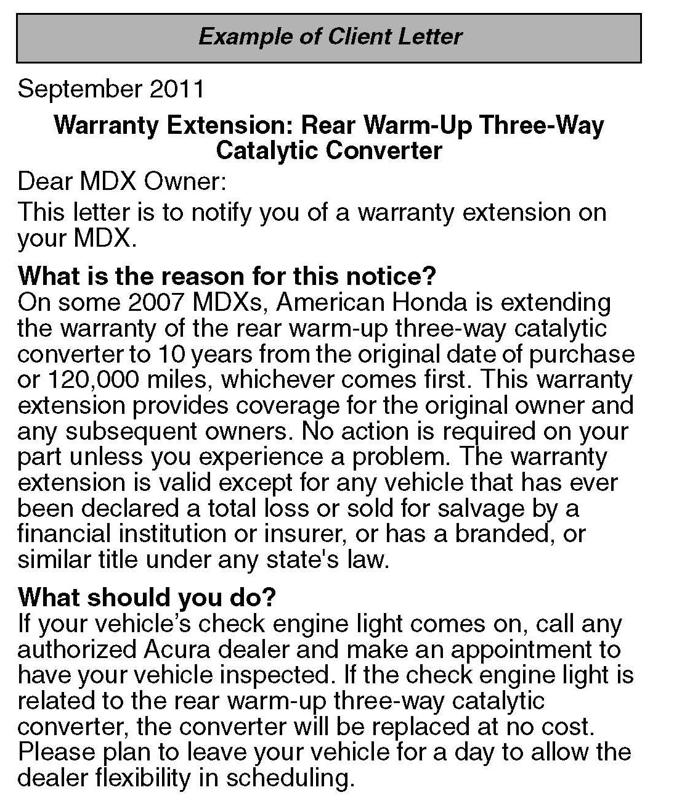
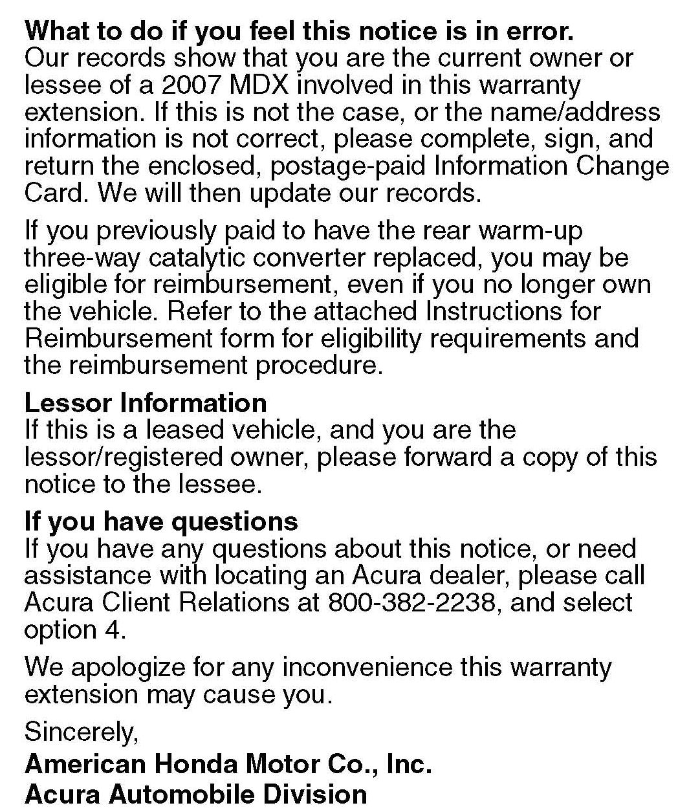
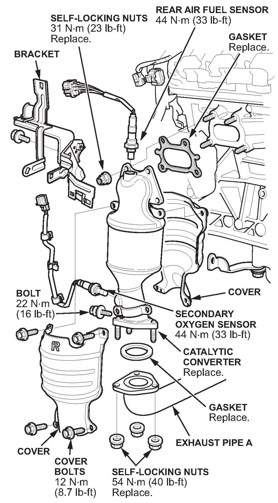

Campaign - Rear Catalytic Converter Warranty Extension
11-018August 17, 2011
Applies To:
2007 MDX - Check the iN VIN status for eligibility
Warranty Extension: Rear (Bank 1) Warm-Up Three-Way Catalytic Converter
BACKGROUND
American Honda is extending the warranty on the rear (bank 1) warm-up three-way catalytic converter to 10 years from the original date of purchase or 120,000 miles, whichever comes first.
The warranty extension does not apply to any vehicle that has ever been declared a total loss or sold for salvage by a financial institution or insurer, or has a branded or similar title under any state's law.
NOTE:
Before replacing the rear (bank 1) warm-up three-way catalytic converter, make sure that Service Bulletin 11-017, Product Update: Software Update To Prevent Rear (Bank 1) Catalyst Damage, Which May Set DTC P0420, has been done.
CLIENT NOTIFICATION


All owners of affected vehicles will receive a notification of this warranty extension. An example of the client notification is at the end of this service bulletin.
Before doing work on a vehicle, verify its eligibility by doing an iN VIN status inquiry.
CORRECTIVE ACTION
Replace the rear (bank 1) warm-up three-way catalytic converter.
PARTS INFORMATION
Rear Warm Up Three Way Catalytic Converter:
P/N 18290-RYE-A00
Gasket (WU TWC to cylinder head):
P/N 18115-RCA-A01
Gasket (A-pipe to WU TWC, two required):
P/N 18212-SA7-003
Gasket (A-pipe to TWC): P/N 18393-SDB-A00
Self-locking Nut (at the engine, four required):
P/N 90212-RCA-A01
Self-locking Nut (exhaust pipe A, nine required):
P/N 90212-5A5-003
WARRANTY CLAIM INFORMATION
Operation Number: 3111L7
Flat Rate Time: 2.1 hours
Failed Part: P/N 18290-RYE-A00
Defect Code: 5M100
Symptom Code: R9200
Skill Level: Repair Technician
REPAIR PROCEDURE
NOTE:
This procedure is an outline form that you can
also use as a checklist for the repair. If you need more
details on the procedures listed below, bookmark them
in the appropriate service manual, or view them online:
^ Exhaust Pipe and Muffler Replacement
^ Intermediate Shaft Removal
^ Warm-Up TWC Removal and Installation
^ Intermediate Shaft Installation
1. Remove exhaust pipe A.
2. Remove the intermediate shaft.

3. Disconnect the rear air fuel ratio sensor connector and the secondary oxygen sensor connector.
4. Remove the catalytic converter bracket, then remove the converter.
5. Transfer the following parts from the original catalytic converter to the new unit:
^ Air fuel sensor - torque the sensor to 44 N.m (33 lb-ft)
^ Oxygen sensor - torque the sensor to 44 N.m (33 lb-ft)
^ Catalytic converter cover - torque the bolts to 12 N.m (9 lb-ft)
6. Reinstall the bracket.
7. Replace the gasket on the engine side, then install the new converter on the engine. Tighten the nuts in a crisscross pattern in two or three steps to 31 N.m (23 lb-ft).
8. Reconnect the air fuel sensor and oxygen sensor connectors.
9. Reinstall the intermediate shaft.
10. Reinstall exhaust pipe A:
^ Replace the three gaskets.
^ Replace the six self-locking nuts at the warm-up TWC, and tighten them in two or three steps to 54 N.m (40 lb-ft).
^ Replace the three self-locking nuts at the TWC and tighten them in two or three steps to 33 N.m (25 lb-ft).

Disclaimer